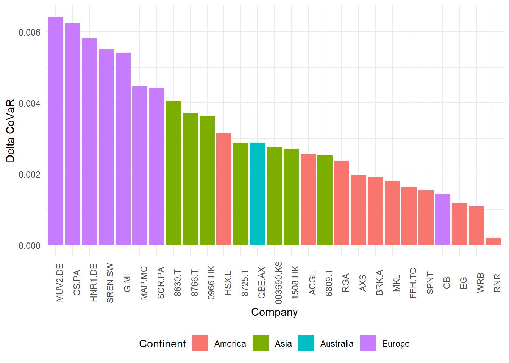
5 Systemic Importance
5.1 Introduction and Motivation
In previous chapters we focused primarily on connectedness measures and topological analysis of how volatility propagates across reinsurers, both in a static and dynamic state. However, systemic risk emerges not only from interconnectedness of the system, but also from correlated leverage exposure. To better assess these two components of risk, we opted to utilize different measures widely used by financial regulators to assess the vulnerability of financial institutions to market downturns and observe the response of the market and systemically important institutions to shock scenarios that simulate extreme tail losses.
5.2 Systemic Risk Measures: a Framework
The network and connectedness analysis of the preceding chapters characterize how volatility disturbances propagate across the reinsurance system: which firms transmit, which absorb, and how the topology of those linkages evolves over time. What they cannot reveal is the magnitude of the economic damage a firm’s distress inflicts on the broader financial system, nor the degree to which individual reinsurers would themselves be undercapitalized under a severe and prolonged market decline. The analysis can be divided in two complementary dimensions of systemic risk.
The first dimension addresses systemic contribution: the marginal increase in system-wide tail risk attributable to a specific institution entering distress. The Conditional Value at Risk (\(\Delta\)CoVaR), introduced by Adrian and Brunnermeier (2016), captures this by measuring the change in the system’s Value at Risk when a firm transitions from its median state to its distress state. A firm with a large \(|\Delta\text{CoVaR}|\) amplifies system-wide tail risk when it fails; one with a small value remains relatively contained, even if it is highly connected. This outward perspective, from the firm towards the system, is complemented by an inward one: the Marginal Expected Shortfall (MES) of V. Acharya et al. (2010), which quantifies the expected loss a firm sustains on the days the market itself is in its worst tail. MES identifies institutions that are most vulnerable when the system is already under stress, and thus most likely to require recapitalization at precisely the moment it is most costly.
The second dimension concerns capital adequacy under stress. Building on the MES framework and the Capital Shortfall Approach of V. Acharya, Engle, and Richardson (2012), Brownlees and Engle (2016) developed the SRISK measure, which integrates the firm’s market-based loss sensitivity with its balance-sheet leverage and regulatory capital requirements. SRISK reports the expected capital shortfall conditional on a severe market decline sustained over several months. Unlike MES, which is a return-based measure, SRISK is expressed in currency units and is therefore directly comparable across firms of different size and geographical location.
Together, \(\Delta\)CoVaR, MES, and SRISK provide three complementary lenses on systemic importance: contribution to tail risk, vulnerability under market stress, and expected capital shortfall. To these market-based measures we add a fourth, structural perspective through the Generalized Impulse Response Functions (GIRF) derived from the BVAR model estimated in Chapter 2. Rather than conditioning on market returns, the GIRF framework traces how a one-standard-deviation shock to a specific firm’s volatility propagates through the network over a defined horizon, yielding the Systemic Impact Index (SII) as a summary of each firm’s total contagion capacity.
These four measures map different economic directions: the \(\Delta\)CoVaR runs from the firm to the system, capturing the systemic contribution of each firm; MES and LRMES run from the system to the firm, capturing the vulnerability of each firm compared to the whole system; SRISK reads the balance sheet data and express capital adequacy in currency units; the SII runs from the firm into the network, summarizing contagion capacity.
The relevance of this framework extends beyond academic analysis. Regulators have increasingly incorporated market-based systemic risk indicators into their supervisory toolkits: the European Insurance and Occupational Pensions Authority (EIOPA) specifies a stress-testing methodology that combines single risk-factor shocks with CoVaR measures and the Conditional Expected Shortfall (CoES) to provide a standardized assessment of institutional resilience (EIOPA (2019)). In the reinsurance literature specifically, Regele (2022) apply \(\Delta\)CoVaR to quantify spillovers from distressed insurers to the global banking sector, while Clemente and Cornaro (2020) link graph-theoretic centrality measures to MES, demonstrating the same network-to-risk correspondence this chapter seeks to validate in the reinsurance context.
5.3 Conditional Value at Risk
5.3.1 Methodology
CoVaR measures the Value at Risk of the financial system conditional on an institution being in distress, while the \(\Delta\)CoVaR isolates each institution’s marginal contribution to systemic risk, allowing identification of each reinsurer’s marginal contribution to the entire system’s risk when it enters distress.
Mathematically, the CoVaR measure of firm \(q\) can be expressed as:
\[ CoVaR^{sys|i}_{q} = VaR_q(r^{sys}| r^i = VaR_q(r^i)) \tag{5.1}\]
where \(r^{sys}\) represents the system returns conditional on \(r^i\), the returns of the firm in distress, and the market state variables \(M_t\). The \(\Delta\)CoVaR is then computed as
\[ \Delta CoVaR_q^{sys|i}=CoVaR_q^{sys|dis}-CoVaR_q^{sys|med} \tag{5.2}\]
Firms with higher \(\Delta\)CoVaR are those whose distress destabilizes the system, while firms with low \(\Delta\)CoVaR cause less material distress to the system, even if their net strength and connectedness measures are high.
For the empirical analysis, firms returns were tested against the MSCI World Index ETF (Ticker: IWDA.AS) to test the distress effects of reinsurance companies the broader market. The choice of the system proxy is consequential of \(\Delta\)CoVaR. The MSCI World Index represents the aggregate global equity market, much larger than the actual reinsurance sector. Measuring each reinsurer’s contribution to tail risk therefore produces conservative \(|\Delta\text{CoVaR}|\) estimates: a firm central to thee reinsurance network but small relative to global equity markets will register low values against the MSCI even if its distress is effective in the reinsurance sector.
The macro state vector comprised 6 economic variables:
- The volatility index (VIX) retrieved from Federal Reserve Economic Data (FRED) with daily frequencies over the sample period considered, to account for log-volatility daily changes
- The 10 years and 3 months Treasury Bond rates spread, to account for long-term and short-term differences in the risk free rates during the sample period, with data retrieved from the FRED database with daily frequency
- The credit spread between bonds classified at “baa” level against the 10 years treasury bond risk free rate, to account for variations in the cost of risky credit. The data was gathered from the FRED database with daily frequency
- The short term 3 month risk free rate, retrieved using daily data from the FRED database
- The daily market returns using the MSCI World Index as the market proxy
- The real estate returns, calculated against the Vanguard Real Estate ETF (VNQ), to account for illiquid assets
The returns were fitted on the \(0.5\) and \(0.05\) quantiles, to capture the median state and the tail distress scenario of the return distribution.
5.3.2 Results
The results of the \(\Delta\)CoVaR analysis show high absolute values for European companies, as it can be seen in Figure 5.1. The significance of the estimation was tested using Huber sandwich (NID) standard errors, with 22 of the 27 firms retaining statistically significant \(\hat{\beta}_i\) at 5% significance level. The full \(\Delta\)CoVaR values with their significance level is reported in Table D.4 in the Appendix Section D.2. European companies appear to contribute more to the destabilization of the system, as their distress scenario would worsen the tail risk of the entire reinsurance system. This finding is consistent with the results of Chapter 3, where European companies were identified as the main source of variance contribution to the system, and AXA XL and Munich Re were the firms with the highest net strength values.
The \(\Delta\)CoVaR analysis reveals a scenario that resembles the one found in Chapter 3 static analysis for the first companies, but with a divergent picture for the remaining ones, with bottom positions occupied primarily by American companies. The relatively low absolute values can point to stable and contained effects of the reinsurance companies over both the adjacent and related market, and more remote and disconnected environments.
Figure 5.2 reports the evolution of the aggregated average \(\Delta\)CoVaR values of all the reinsurance companies during the whole sample, with bands representing the upper and lower 5th quantile values for comparison with the MSCI World Index. The vertical dashed lines contextualize the measure against the events considered in Chapter Chapter 4. The values remain similar through the whole sample, with later measures having a smaller range (quantile values are closer) compared to the measures at the start of the period. The most notable decline is in correspondence with the COVID pandemic.
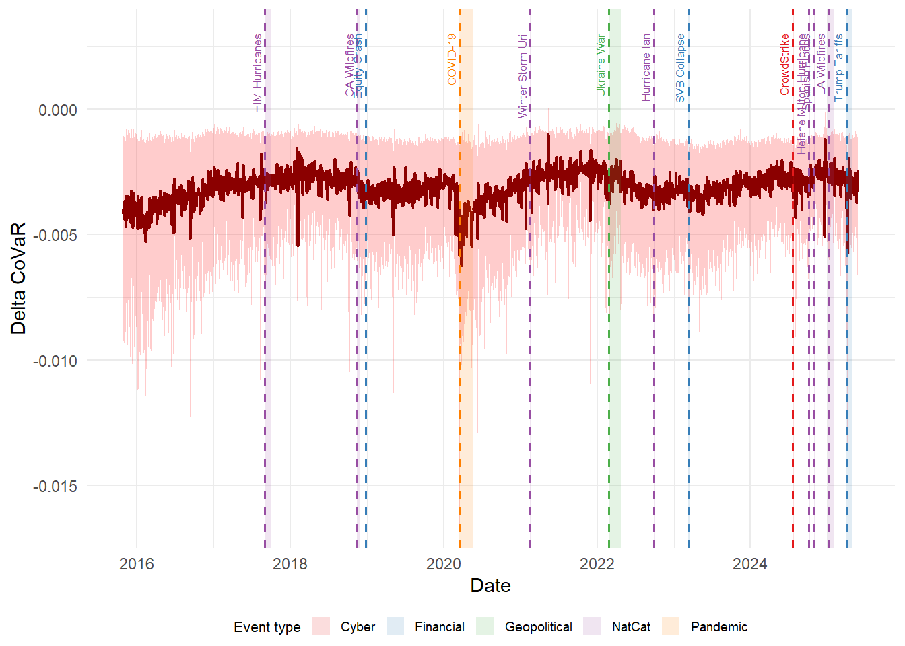
As a robustness check, the \(\Delta\)CoVaR analysis was replicated using the iShares U.S. insurance Sector ETF (IAK) as an alternative system proxy, measuring each reinsurer’s contribution to US insurance sector tail risk rather than the global equity market. The two results yield a Spearman rank correlation of \(\rho = -0.433\), confirming that they capture almost inverse dynamics of systemic risk. Under the IAK specification, American reinsurers occupy the top position, displacing the European firms that dominate the MSCI-based ranking, with American companies’ distress amplified within the US insurance sector through domestic co-movement. However, it is important to note that Chubb, Arch Capital Group, and WRB Berkley Corp. (the top 3 companies in the replicated CoVaR analysis) are also contained in the IAK ETF, amplifying their effects over the considered sector. Also given this limitation, the MSCI-based proxy remains the primary analysis, as it measures spillover potential into the broader financial system. This near-inverse ranking offers a key result. Against the global market, the European reinsurers act as cross-sector contagion vectors, whereas against the US insurance sector American firms dominate throughout within-sector co-vulnerability. The two specifications answer different questions, and the divergence underscores that the label systemic is incomplete without specifying the reference system agisnt which it is measured.
5.4 Marginal Expected Shortfall
5.4.1 Methodology
Marginal Expected Shortfall quantifies the expected firm return conditional on extreme negative market returns that exceed the left-tail 5% threshold. It is driven by three main factors: the market beta \(\beta\), the correlation between the market returns and the firm returns, and the volatility of the firm returns.
\[ MES_i = E[r_t^i | r_t^{mkt} < VaR_{0.05}(r^{mkt})] \tag{5.3}\]
As market conditions vary significantly and rapidly, static MES provides limited informational value in a dynamic setting. To grasp the dynamic behavior of the market and its risk, we estimated the dynamic \({MES}\) through a GJR-GARCH DCC model (Engle (2002) to compute the dynamic conditional correlation of the market and the returns of the firm in a distress scenario. We assume that the standardized firm return \(z_{i,t}\) can be decomposed into a component driven by the market innovation \(z_{m,t}\) and an idiosyncratic innovation \(\xi_{i,t}\), such that \(z_{i,t} = \rho_{i,t} z_{m,t} + \sqrt{1-\rho_{i,t}^2} \xi_{i,t}\).
\[ \widehat{\text{MES}}_i = \sigma_{i,t} \left( \rho_{i,mkt,t} \cdot E[Z_{mkt} \mid Z_{mkt} < C] + \sqrt{(1-\rho_{i,mkt,t} ^2)} \cdot E[\xi_i \mid Z_{mkt} < C] \right)\]
where \(C\) is the threshold corresponding to the market’s 5% quantile. In this framework, the first expectation captures the systematic tail component, while the second expectation captures any residual tail dependence not accounted for by the DCC correlation.
The GJR-DCC framework uses a two-stage quasi-maximum likelihood estimation procedure to exploit the model’s hierarchical structure. It proceeds in two stages: in the first one, for each asset the GJR-GARCH parameters are estimated by maximizing the univariate quasi-log-likelihood, yielding the conditional volatility series and the standardized residuals.
In the second stage, the standardized residuals from the previous step are used to estimate the DCC parameters by maximizing the correlation component of the quasi-log-likelihood.
The use of a GJR-DCC model allows all three MES drivers to vary, producing estimations that react to changing market conditions. Following V. V. Acharya et al. (2016), this decomposition separates firm’s expected returns on bad market days into the systematic component and the idiosyncratic tail component. Mathematically, the first step GJR-GARCH (1,1) variance estimation can be expressed as: \[ \sigma^2_{i,t} = \omega + (\alpha + \gamma \times I_{\epsilon_{t-1}<0}) \times \epsilon^2_{t-1} + \beta^{GJR} \times \sigma^2_{t-1} \tag{5.4}\]
where \(\omega\) is the baseline long-run variance component, \(\alpha\) captures the intensity of the reaction to all shocks, while \(\gamma\) captures the additional volatility generated by negative shocks, and \(\beta^{GJR}\) captures the persistence of volatility clustering in the volatility of tomorrow. The coefficient values are reported in Table D.5 in the Appendix Section D.3
This first step volatility estimation allows to capture the asymmetry that financial firms exhibit to positive and negative shocks, reflecting their sensitivity to market stress. To account for fat tails typically exhibited by financial return distributions, the innovations of the GJR-GARCH model were estimated using a Student-t distribution. This allows the model to treat extreme outliers as part of the natural distribution, preventing the underestimation of volatility that would occur under Normal distribution.
he second step of the DCC Q-matrix evolution is described as: \[ Q_t = (1 -a -b)\bar{Q} + a(z_{t-1} z'_{t-1}) + bQ_{t-1} \tag{5.5}\]
where \(a\) and \(b\) represent the sensitivity and persistence of the correlation. If the sum of the two terms is close to 1, the correlation shocks are highly persistent throughout the whole sample, and during high stress periods the higher correlation \(Q_t\) will persist for a longer period. To ensure numerical stability and convergence, the DCC model was fitted using a Multivariate Normal distribution. This approach follows the Quasi-Maximum Likelihood framework, which maintains statistical consistency for the correlation parameters even when the underlying innovations are non-normal. An alternative specification using a multivariate Student-\(t\) distribution was attempted but resulted in numerical inabilities that prevented stable convergence. The use of a Normal distribution rather than a Student-\(t\) implies that the model does not account for as much tail dependence, meaning that extreme co-movement during market crisis are understated. The resulting MES and LRMES estimates for the crisis periods should therefore be interpreted as conservative, with true losses during simultaneous reinsurer distress potentially exceeding those reported.
Since the static MES captures only single-day dynamics, to include long-lasting crisis periods the Long Run Marginal Expected Shortfall (LRMES) was introduced, extending the MES concept to multi-month horizon without the limitations of the single-day sensitivity. It can be expressed mathematically as \[ LRMES \approx 1- \exp\!\bigl(\log(1-d)\times \beta_{i,t}\bigr) \tag{5.6}\]
where \(d\) is the fraction of market decline and \(\beta\) is the time-varying market beta of firm \(i\). It is estimated from the GJR-GARCH DCC model as \(\beta_{i,t} = \rho_{i,t} \times \frac{\sigma_{i,t}}{\sigma_{m,t}}\), where \(\sigma_{i,t}\) and \(\sigma_{m,t}\) are the GJR-GARCH conditional volatilities and \(\rho_{i,t}\) is the DCC conditional correlation. The time-varying beta is evaluated at each balance-sheet date using the DCC-estimated \(\beta_{i,t}\), but it is treated as constant over the 126-day horizon within the closed-form approximation shown in Equation 5.6.
The combination of the GJR-GARCH with the DCC model allows to capture the evolution of volatility and correlations over time, encoding the typical behavior of financial markets, such as volatility clusters, asymmetrical impact of bad news, and correlation spikes during crises.
However, some important approximations are worth noting. The closed-form approximation assumes log-normally distributed returns and that daily shocks are independent across time. It also implies constant proportional leverage over the horizon, as the formula does not account for endogenous balance-sheet adjustments. The use of the same time-varying beta formula for all reinsurers introduces moreover a Time-zone bias: Asian companies reflect the previous day’s US closure, creating potential spurious intraday correlations. These limitations might result in an underestimation of true crisis losses and for a more detailed and regulatory framework they should be addressed in careful and precise manner.
5.4.2 Results
More informative is the temporal evolution of the MES through the sample period. Figure 5.3 provides a graphical representation of the average MES value of the reinsurance companies, with dispersion around the 5% and 95% quantiles. In particular, the highest losses are in correspondence with the COVID-19 pandemic, with average expected losses greater than 10%. The widening dispersion accompanying the MES declines suggests that it is not uniform across the firms, indicating that losses may be concentrated in a subset of companies, not spreading further. This concentration is consistent with the asset-side idiosyncratic split identified in Chapter 4, where the sector as a whole is more resilient than its most-exposed members, whose losses deepen disproportionally as the market enters its tail. Other events, even related to the reinsurance sector, do not seem to cause spikes in the system average MES, showing a greater resilience of the sector to market declines. Notable spikes are at the end of the sample period, coinciding with the “Liberation day” tariffs, and one in the second half of 2016, not coinciding with any detected event.
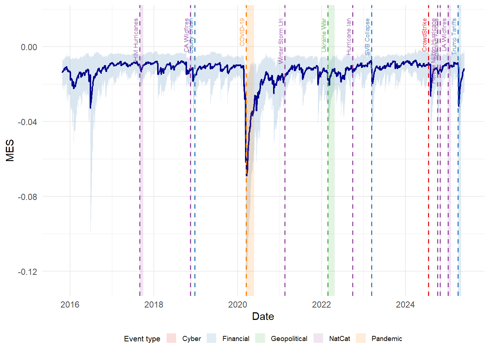
Figure 5.4 (a) shows the 5 companies with the highest average MES values, meaning that these are the companies that on average expect greater losses given that the market is in its worst days. Reinsurance Group of America, represented by the green line, is consistently above other companies, with sharper and more frequent declines, possibly indicating greater sensitivity to market downturns.
High correlation was noted especially between Generali and AXA (\(\rho > 0.8\)), indicating greater co-movements and similar loss responses by these reinsurers. It is worth noting that all three companies operate also in other financial sectors, as Generali and AXA undertake also primary insurance services, possibly explaining the higher correlation in the expected loss. This reminds that the reinsurance companies comprise heterogeneous business models, and that the most MES exposed firms tend to be the most multi-line and asset-heavy companies, reinforcing the reading of the systemic risk drive by asset-side channels.
Figure 5.4 (b) instead reports the average values of the aggregated MES by continent. Clearly, European companies account for higher expected losses, confirming the pattern already seen in Chapter 3 and 4. American companies highly correlate with European ones (\(\rho \approx 0.90\)), while Asian reinsurers tend to correlate less with European and American markets (\(\rho \approx 0.56\) and \(\rho \approx 0.46\) respectively). From the line chart, it is possible to see the tendency of Asian firms to recover more rapidly from market losses: the declines are more contained (smaller absolute value) and rapidly return closer to zero, indicating that the expected losses of these firms are smaller and they last for a more limited period. Economically, Asian reinsurers appear more insulated from global market trails, partly due to the domestic orientation and a distinct underwriting cycle, and partly through the time-zone artifact that may inflate their measured correlation, but in either reading, the pattern reinforces their peripheral role in the system.
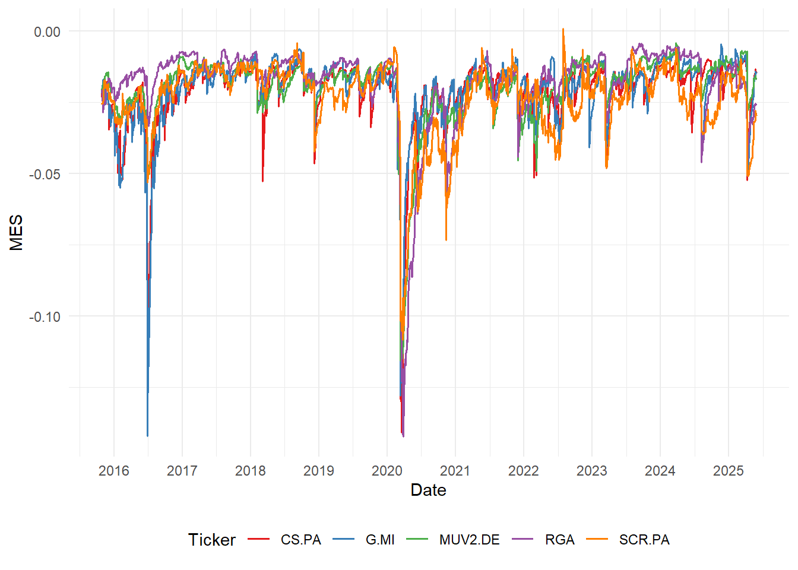
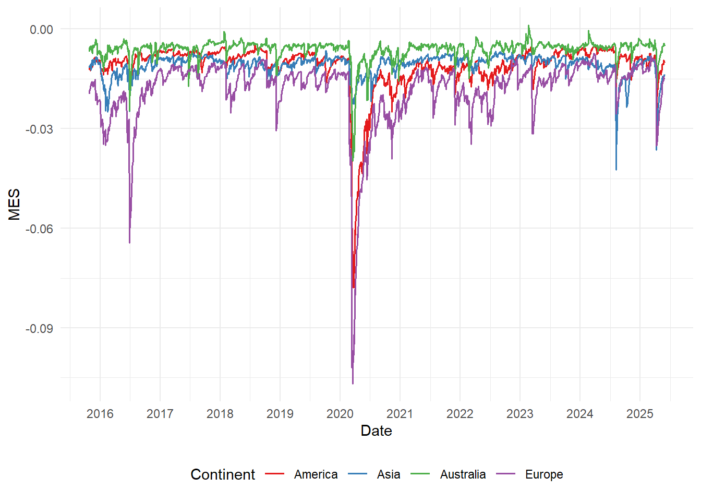
As done in Section 5.3, the MES specification was tested against the US insurance sector proxy (IAK), and here as well the geographic pattern inverts: American firms record the largest expectd losses on days when the US insurance sector is in its left tail, while European and Asian firms rank lower. The cross-specification Spearman rank correlation is \(\rho = 0.156\), reflecting the different answer of the MES in the MSCI and IAK based systems. The MSCI results is consistent with the greater integration into international capital markets and larger equity float. The IAK result, despite the high global interconnectedness and the low community separation detected (recall the low modularity score, \(r = 0.162\)), still show domestic market influence. ?tbl-proxy_msci_iak compares the ranks of the first companies for the IAK and MSCI based analysis for the \(\Delta\)CoVaR and MES values.
5.5 SRISK
SRISK extends the MES frameworks by incorporating leverage considerations and capital requirements theory. This measure combines market-based risk measures with balance sheet data, based on the core idea of Capital Shortfall Approach introduced by V. Acharya, Engle, and Richardson (2012), in which a new method was proposed to estimate the capital required by a financial institution to survive another financial crisis.
The SRISK assesses the capital structure of reinsurance companies in stress scenarios, combining leverage, market sensitivity (LRMES) and regulatory capital requirements. It accounts for the fact that, in a crisis scenario, a firm’s ability to raise funds is typically hampered by adverse market conditions. Mathematically, it is defined as follows: \[SRISK_{i,t} = k \times \text{DEBT}_{i,t} - (1-k)\times \text{EQUITY}_{i,t} \times (1-\text{LRMES}_{i,t})\] where \(k\) is the capital prudential ratio that determines the minimum equity that a firm must hold as a fraction of total assets. Following the benchmark prudential ratios adopted in the systemic risk literature (Brownlees and Engle (2016)), a capital ratio of \(k=8\%\) is applied uniformly for all reinsurers.
The \(\text{DEBT}\) values represent the financial leverage and were extracted from the balance sheet data available on Yahoo Finance for the financial years 2024, 2023, and 2022, under the line item ‘Total Debt’. The \(EQUITY\) was then calculated by extracting the ‘Ordinary Shares Number’ for each fiscal year and multiplying it by the closing price at the date at which the balance sheet was published. To account for different currency valuation, the exchange rate between the currency and the USD was extracted using Yahoo Finance data, in order to compute the SRISK measure in USD. As some companies have different fiscal year-end dates, the price and exchange rate were calculated at the indicated closing date on the balance sheet, but the overall calculation was carried out considering the end of the year as the standard closing date for the fiscal year. In addition, different accounting standards were not considered. However, this limitation is acceptable for the purpose of assessing the framework and is left for more detailed future studies.
Under the data we extracted, no firm records positive SRISK under any of the severity scenarios tested (small, medium, and large severity, with \(d = 0.20, 0.40, 0.60\) respectively) or fiscal year. Aggregate capital shortfall equals zero across all specifications. This result reflects a structural feature of reinsurance balance sheets: firms fund operations primarily through float, not financial debt, making financial leverage modest relative to market capitalization. SRISK was designed for bank like leverage structures where financial debt is much greater than equity. Applied to reinsurance companies, the measure confirms capital adequacy rather than identifying shortfall. This result complements the ones reported early: European reinsurers are important contagion vectors, with high \(\Delta\)CoVaR and MES values, but not as leveraged counterparties facing capital shortfall. Since reinsurers are funded primarily by insurance float, which is operational and long-duration, so a leverage-based shortfall measure mechanically returns zero. This implies that being a transmitter of systemic risk and being a fragile, under-capitalized counterparty are distinct, and that the European core identified in the previous chapters exxhibits the first without the second.
Two qualifications sharpen rather than overturn this reading. The balance-sheet sample spans only three fiscal years (2022–24), a moderate-connectedness window, so capital-adequacy risk during the high-TCI regimes of Chapter Chapter 4 is plausibly understated: zero shortfall now does not guarantee zero shortfall in a high-regime crisis. Moreover, the uniform \(k=8\%\) prudential ratio is a banking benchmark, whereas insurance capital regimes such as Solvency II operate differently; part of the zero-shortfall result thus reflects a model–instrument mismatch, which strengthens rather than weakens the conclusion that SRISK is not the natural capital tool for float-funded insurers.
5.6 Descriptive Shock Propagation Scenario
The second part of systemic risk assessment focused on the stress testing through the use of counterfactual shock scenarios. The BVAR model estimated in Chapter Chapter 2 is used to estimate a Generalized Impulse Response Function (GIRF) in which one standard deviation shock is applied to firm \(k\)’s volatility equation, tracing propagation through the network via IRF over a h-step horizon.
5.6.1 Methodology
Building on the BVAR model estimated in Chapter 2 and applied in the static and dynamic analyses of Chapters 3 and 4, we extend the same framework to a stress testing exercise through Generalized Impulse Response Functions (GIRF). Following Pesaran and Shin (1998)}, we adopt the GIRF framework rather than orthogonalized IRFs to preserve invariance to the ordering of variables in the system and provide consistency with the Generalized Forecast Error Variance Decomposition approach used throughout this work, as GIRFs are not structural, but rather ordering-invariant, reduced-form conditional forecasts with no causal identification strategy. Under this framework, a shock to firm \(i\) is not assumed to leave contemporaneous innovations in other equations at zero but instead, the expected response of the full system is conditioned on the observed covariance structure. Formally, denote the \(h\)-step moving-average coefficient matrices \(\Phi_h\), derived from the posterior-median lag matrices \(A_k\) via the recursion: \[\Phi_0 = I_N, \qquad \Phi_h = \sum_{k=1}^{\min(h,p)} \Phi_{h-k} A_k, \quad h = 1, 2, \ldots, H\] The generalized impulse response to a one-standard-deviation shock originating in firm \(i\) is then: \[ \text{GIRF}_i(h) = \Phi_h \cdot \frac{\boldsymbol{\Sigma}\mathbf{e}_i}{\sqrt{\sigma_{ii}}} \tag{5.7}\] where \(\boldsymbol{\Sigma}\) is the posterior-median residual covariance matrix, \(\mathbf{e}_i\) is the \(i\)-th unit selection vector, and \(\sigma_{ii}\) is the \(i\)-th diagonal element of \(\boldsymbol{\Sigma}\). The term \(\boldsymbol{\Sigma}\mathbf{e}_i/\sqrt{\sigma_{ii}}\) constitutes the generalized impulse vector: it scales the shock to one standard deviation of firm \(i\)’s innovation while propagating the contemporaneous cross-equation correlations implied by \(\boldsymbol{\Sigma}\), rather than suppressing them as orthogonalized methods do. Both \(A_k\) and \(\boldsymbol{\Sigma}\) are taken at their posterior median, providing a tractable point estimate consistent with the plug-in GFEVD computed in Chapter 2.
A forecast horizon of \(H = 50\) trading days is selected, capturing the short-term propagation window over which volatility shocks are most persistent. To aggregate the full cross-firm propagation capacity of each firm into a single measure, we define the Systemic Impact Index (SII): \[ \text{SII}_i = \sum_{j \neq i} \left| \sum_{h=1}^{H} \text{GIRF}_{i \to j}(h) \right| \tag{5.8}\] where \(\text{GIRF}_{i \to j}(h)\) denotes the \(j\)-th element of \(\text{GIRF}_i(h)\). The inner sum accumulates the response of firm \(j\) throughout the horizon; the absolute value prevents positive and negative responses from canceling; the outer sum aggregates across all \(N-1\) receiving firms. A firm with high SII transmits large cumulative volatility disturbances to the rest of the network following an idiosyncratic shock, regardless of direction.
5.6.2 Results
The results obtained from the application of the BVAR model impulse response highlighted the predominant contribution by European reinsurers, as Munich Re, Generali, AXA XL, and Hannover Rück, with Reinsurance Group of America being the only non-European to appear in the top 5 SII ranked companies. Table 5.2 reports the SII values for each reinsurer. The average SII values for European companies is \(22.01\), while for American companies this decreases to \(16.94\), and decreases even further for the Asian companies, with \(9.83\), as the bottom positions are occupied by them. This reflects the findings that have been highlighted throughout the entire work, with European firms contributing to volatility disturbance, primarily across the center of the network, but due to the relatively close and tight topology and dynamics of the network, also peripheral firms are affected, even if with a lower degree. Figure 5.5 and Figure 5.6 shows the different propagation effects to the log-volatility for Munich Re and Taiping Reinsurance Co, respectively, the first and last companies in the SII ranking. The color scale applied for the two heatmap is the same, making the comparison between the two visually honest. As the dark red bar shows, the propagation of Munich Re lasts for longer period, while the effects of Chinese company tend to become null or even negative with further observations. Interestingly, the effects of Munich Re are more prominent across other European companies, like AXA, Mapfre, or Swiss Re, while the effects of the Chinese companies, although shorter in time, tend to span across multiple reinsurers with the same degree. This structure highlights asymmetric risk propagation across the system, with risk flowing primarily from Europe to the other closer European companies, and to the other reinsurers with lower effects, but with more persistent effects, while Asian firms tend to act primarily as shock absorbers, as their effect is limited in terms of duration.
Geographical similarity was observed especially between European reinsurers and between Japanese reinsurers, as visible in Figure 5.7, Figure 5.8, and Figure 5.9 showing a stronger volatility disturbance, both in terms of duration and absolute value, while this behavior was not observed for American companies. This result recalls the observation of the pairwise connections in Table 3.1, where the explanation of Japanese reinsurers’ volatility was derived primarily from other domestic companies.
| Ticker | SII |
|---|---|
| MUV2.DE | 25.381795 |
| G.MI | 23.887869 |
| RGA | 23.763357 |
| CS.PA | 23.394265 |
| CB | 22.839457 |
| WRB | 22.753888 |
| HNR1.DE | 22.723070 |
| MKL | 22.434621 |
| MAP.MC | 21.287102 |
| SREN.SW | 20.949194 |
| BRK.A | 18.427158 |
| EG | 18.120624 |
| AXS | 16.757767 |
| ACGL | 16.551351 |
| RNR | 16.253195 |
| SCR.PA | 15.607024 |
| FFH.TO | 13.652598 |
| 8630.T | 12.713158 |
| 1508.HK | 12.280094 |
| 8725.T | 11.683739 |
| 8766.T | 11.181956 |
| QBE.AX | 10.098868 |
| HSX.L | 10.058311 |
| 003690.KS | 9.331017 |
| SPNT | 7.619117 |
| 6809.T | 6.462345 |
| 0966.HK | 5.170789 |
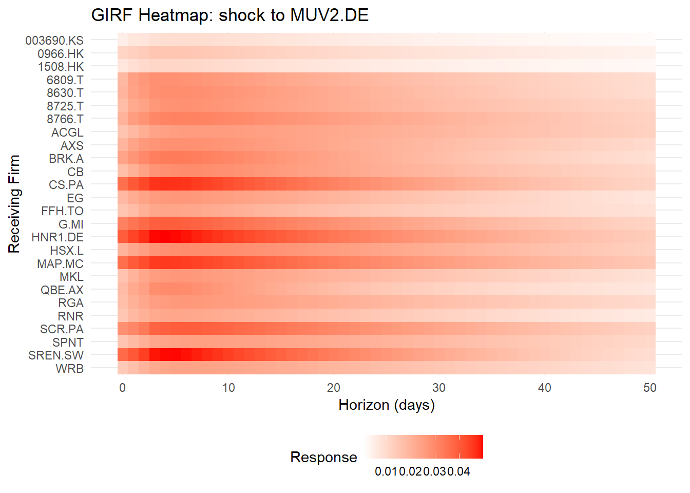
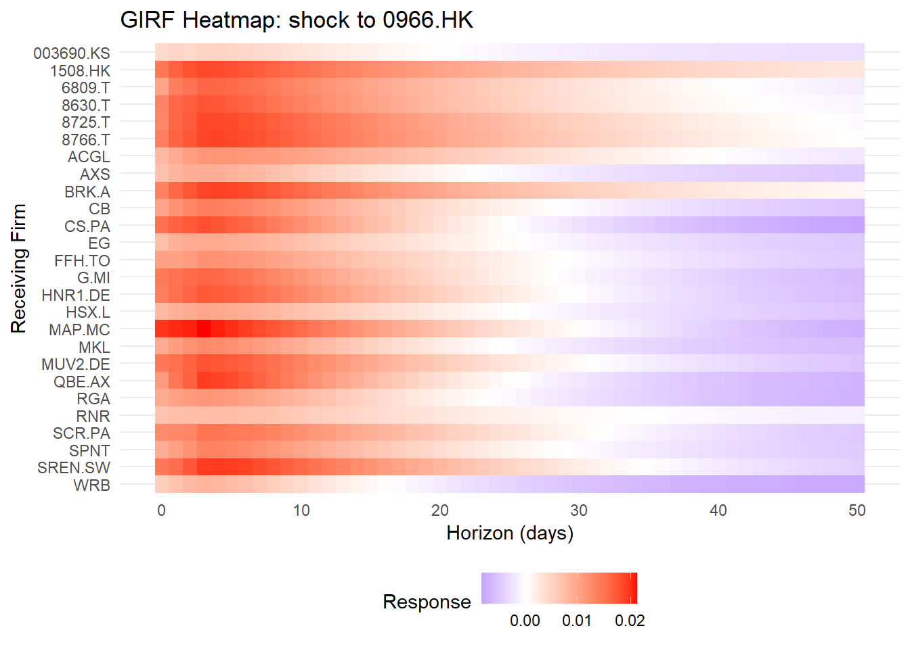
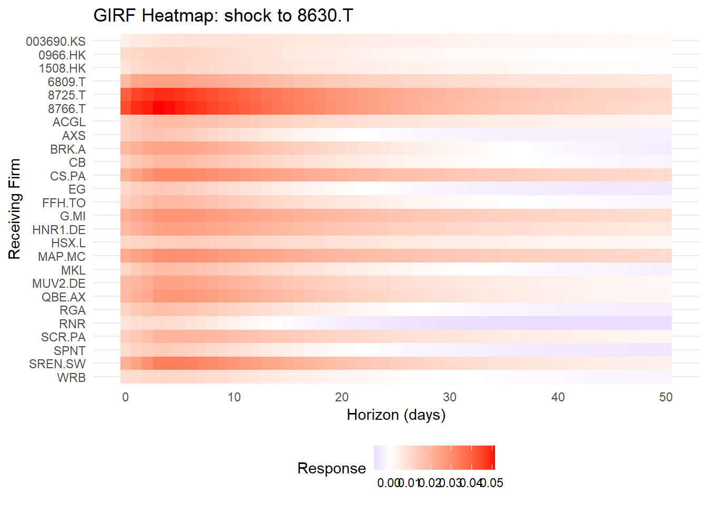
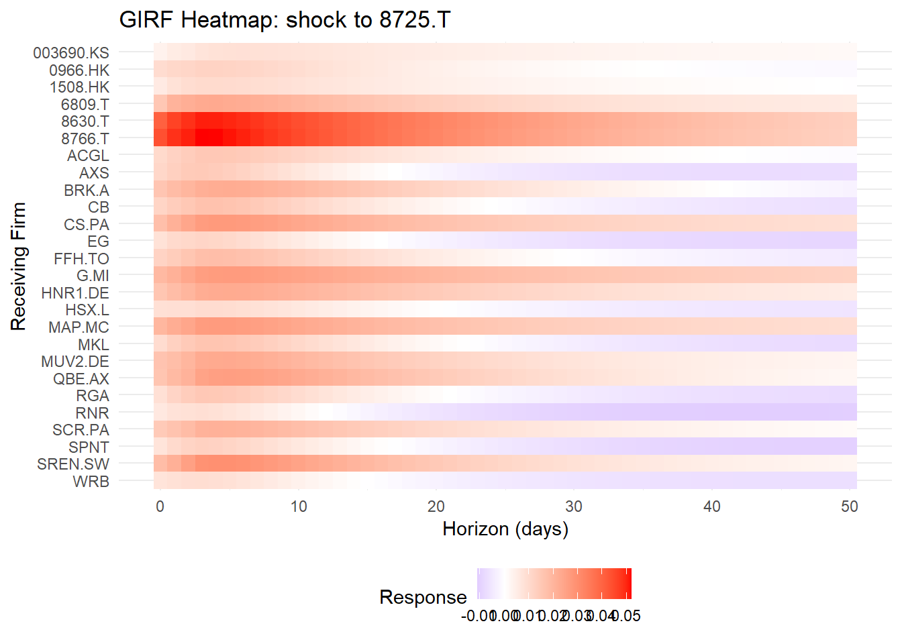
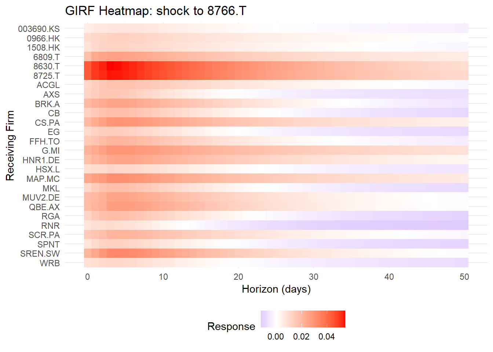
5.7 Cross-Validation
To ensure the robustness of our findings, we conduct a cross validation between the metrics of Chapter Chapter 3 and the systemic risk indicators of this chapter. Recalling the methodology used in the static analysis, the Net-strength and Out-strength values were used as primary indicators of volatility disturbance of the system. ?fig-net-risk provides a representation of the correlation between the Net strength values and the indicators used to assess the overall systemic risk of the reinsurance network considered. The correlation used to compare the different metrics was the Spearman’s rank correlation. The Net-strength exhibits a negative rank-correlation with \(\Delta\)CoVaR (\(\rho = -0.56\)) and with the average MES values (\(\rho = -0.38\)), both significant at the 5% confidence level. Similar correlation was observed in absolute terms for the Net strength and the SII, at \(\rho = 0.53\). The presence of significant correlation confirms that the reinsurers identified as primary explainer of log-volatility drift are also those whose distress generates the most significant marginal increase in the system’s tail risk and are typically predicting the dynamic contagion potential during stress events. The negative sign of the \(\Delta\)CoVaR and MES correlations is directionally consistent: high positive Net-strength (net variance transmitter) corresponds to large negative \(\Delta\)CoVaR and MES (large increase in tail risk under distress), so the negative sign reflects agreement, not opposition, between the two frameworks.
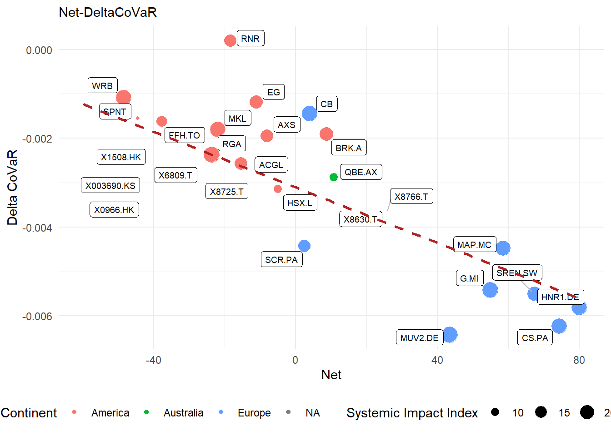
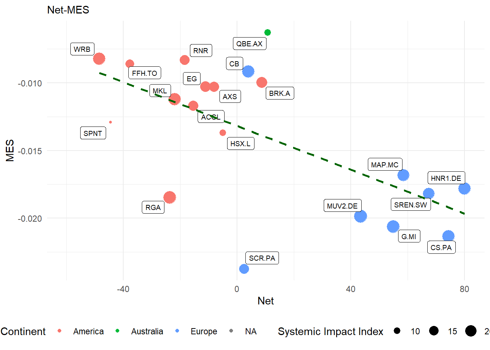
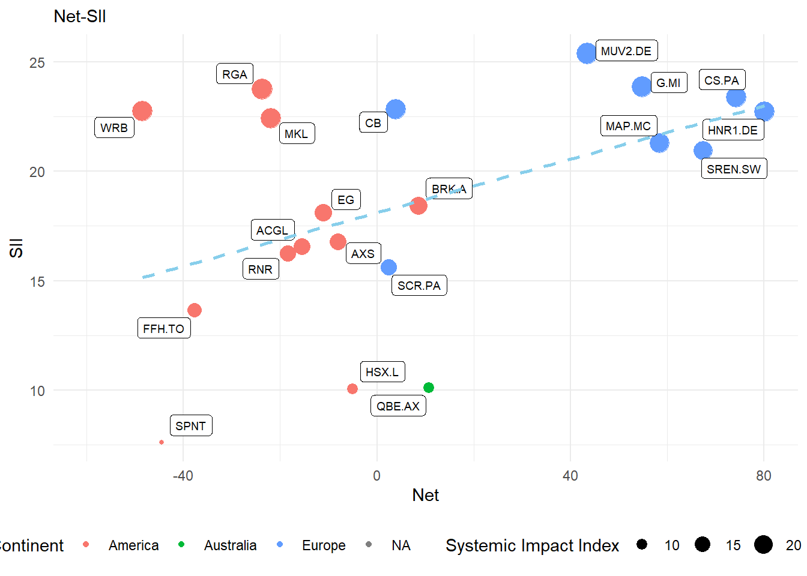
We further assess the topological results of the static analysis against the systemic risk measures introduced in this chapter by examining the Out-strength and Eigenvector centrality relationships.
The correlation was tested also between the Out-strength and the \(\Delta\)CoVaR. Out-strength captures the directional component of a firm’s influence without netting against received variance (In-strength) . Despite removing the effects of the log-volatility variance received from the others, the correlation with \(\Delta\)CoVaR is interestingly lower (\(\rho = -0.32\), \(p< 0.05\)), indicating that the Net-strength serves as a stronger indicator for identifying companies that generate the highest increase in tail risk. This shows that netting matters: a firm’s net directional role identifies systemic contributors more sharply than gross transmission alone, since a firm that both transits and receives heavily is less systemically distinctive than a clean net exporter. The balance of flows is the better systemic signal.
We also examine the alignment between Eigenvector centrality and the Systemic Impact Index. Note that both are derived from the same BVAR model: eigenvector centrality is the principal left eigenvector of the GFEVD matrix, while the SII is the sum of abbslute cumulative GIRFs, where GIRFs are constructed from the same lag matrices and covariance \(\Sigma\) that generated the GFEVD. The observed Spearman rank correlation (\(\rho = 0.66\), Figure 3.4) thus reflects internal model consistency rather than independent empirical validation, confirming that the BVAR-based network representation is self coherent, but is not providing out-of-sample evidence that the GFEVD centrality corresponds to real-world systemic importance. The independent cross-validation evidence consists of the \(\Delta\)CoVaR and MES reported above.
5.8 Conclusion
This chapter examined the systemic importance of global reinsurers through four complementary lenses: the marginal contribution to market tail risk (\(\Delta\)CoVaR), vulnerability under extreme market stress (MES and LRMES), expected capital shortfall in prolonged downturns (SRISK), and contagion capacity through the network (SII). Together, these measures extend the purely topological picture developed in Chapters 3 and 4 by introducing magnitude: not merely who is connected, but how severely distress in one firm damages the system and whether the sector holds sufficient capital to absorb it.
The \(\Delta\)CoVaR and MES analyzes converge on a consistent ranking: European reinsurers generate the largest marginal increases in system-wide tail risk and sustain the deepest expected losses when markets are in distress. This finding directly validates the network centrality results of Chapter 3, where the same firms occupied dominant positions in Out-strength and Eigenvector centrality. The cross-validation in Section 5.7 formalizes this correspondence: Net-strength is significantly rank-correlated with both \(\Delta\)CoVaR (\(\rho = -0.56\)) and MES (\(\rho = -0.38\)), confirming that reinsurers identified as primary variance contributors through the GFEVD are also those whose distress generates the most material increase in tail risk.
Regarding SRISK, no firm in the sample record positive SRISK under any severity scenario or fiscal year examined. Aggregated capital shortfall equals zero across all specifications. This confirms that the sector’s financial leverage is structurally modest relative to its market capitalization, and that the European contagion vectors identified through \(\Delta\)CoVaR and MES are not simultaneously exposed to capital shortfall risk under standard metrics. This separation aligns with the international shift from the entity-based G-SII designation toward the activities-based Holistic Framework of the IAIS. The systemic concern raised by reinsurers is one of interconnectedness and asset-side spillover, not of bank-style solvency risk under conventional leverage metrics.
The BVAR-based stress testing reinforces the asymmetric structure of the network. Munich Re and the other European hubs generate persistent, broad-spectrum volatility disturbances that decay slowly, whereas Asian firms produce shorter-lived and more localized impulse responses. Japanese firms exhibit strong intra-cluster propagation, consistent with the domestic pairwise connections identified in Chapter 3. Asian firms, by contrast, appear to absorb rather than transmit global shocks.
Several limitations qualify these findings. The SRISK analysis covers only three fiscal years, and the balance-sheet sample coincides with a period of moderate TCI; capital adequacy risks during high-connectedness regimes identified in Chapter Chapter 4 are likely understated. The closed-form LRMES approximation assumes constant proportional leverage and log-normal returns, and the time-zone bias introduced by Asian companies’ lagged price discovery may inflate their measured correlation with European markets. Finally, the GIRF framework is a reduced-form, ordering-invariant exercise: the propagation patterns it reveals reflect statistical co-movement, not structural transmission mechanisms.
Taken together, the evidence in this chapter supports a two-tier characterization of the global reinsurance system. A small group of European incumbents sits at the intersection of high topological centrality, elevated systemic contribution, and strong dynamic contagion potential. A second group, composed primarily by Asian reinsurers, occupies the network periphery and contributes little to tail-risk amplification, with capital structures that remain resilient under standard financial leverage benchmarks. This structure suggests that macro prudential oversight of reinsurance should prioritize European core for contagion monitoring, while balance sheet surveillance across the sector should track the ratio of financial debt to market capitalization over the economic cycle, particularly during high-connectedness regimes where the current zero-shortfall finding may not hold. This chapter therefore provides a decoupling of the debate regarding the systemic properties of the reinsurance sector: global reinsurers are systemically important as interconnected, asset-side transmitters, but not as bank-like leveraged institutions prone to capital shortfall.